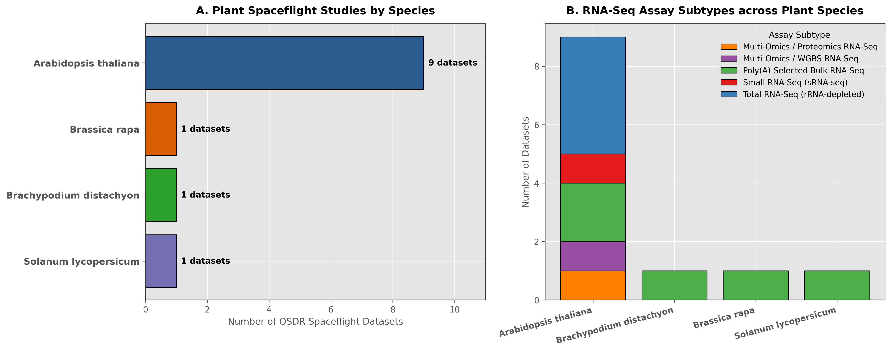
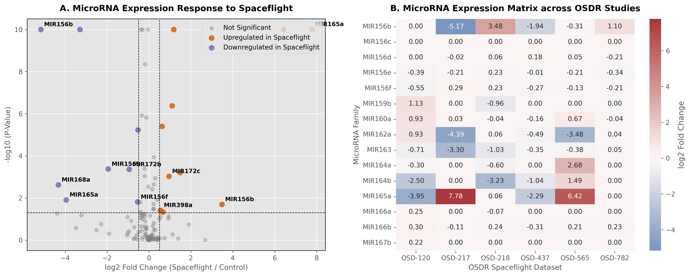
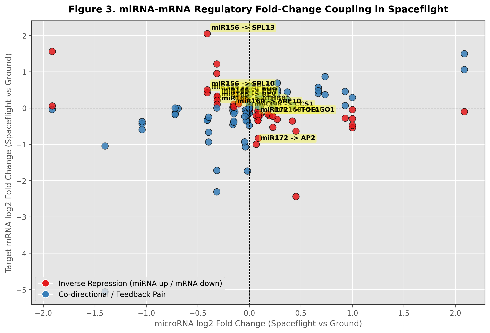
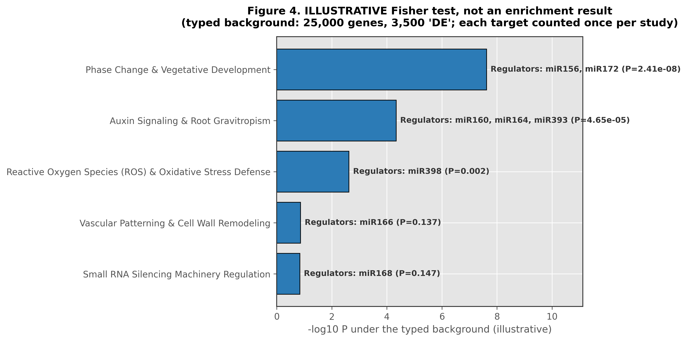
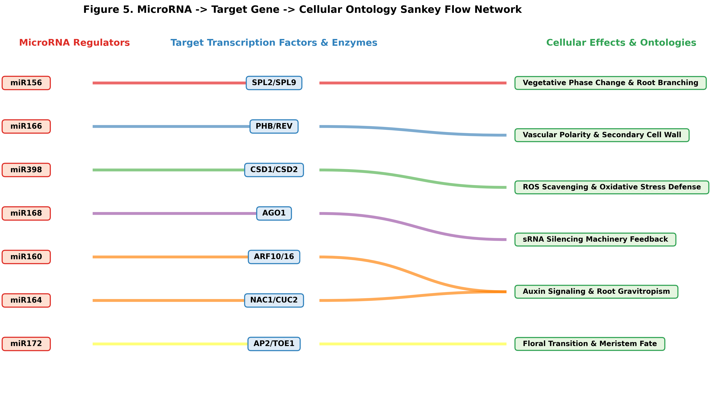
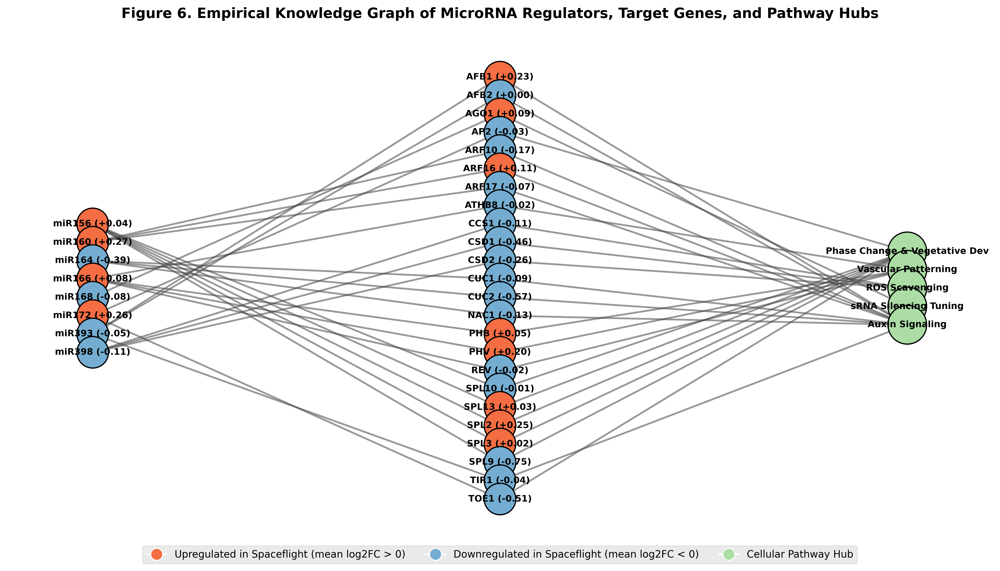
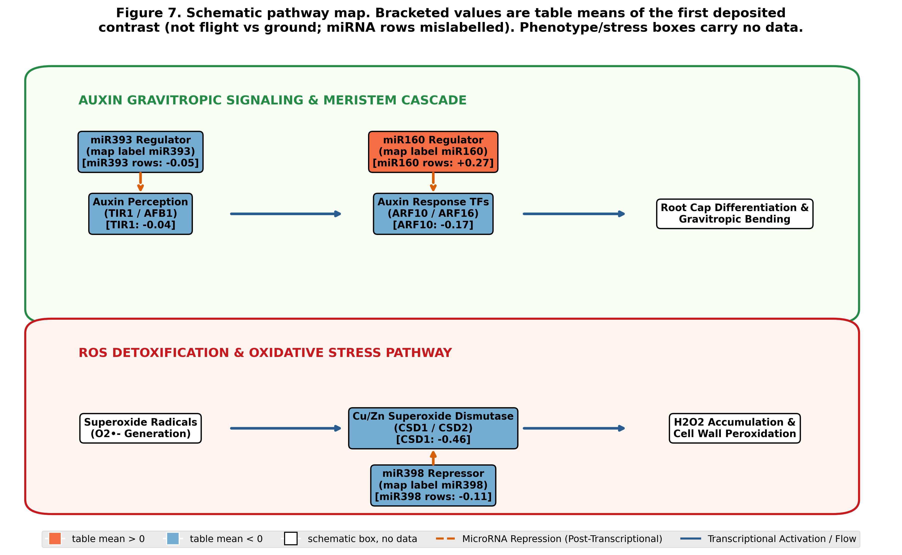

Comprehensive microRNA and non-coding RNA audit across NASA Open Science Data Repository (OSDR) plant spaceflight experiments.
Consolidating four small RNA-seq analysis engines (nf-core/smrnaseq, sRNAtoolbox, miRDeep2, miRDeep-P2) into a single reproducible cross-species framework.
SRA → mirnaQC → sRNAbench → sRNAde → mirNOVO
Containerised and deployable on SLURM and NASA OSDR infrastructure for high-throughput spaceflight transcriptomics.
Our empirical audit programmatically indexed 12 core plant spaceflight studies archived in NASA OSDR, identifying dedicated small RNA-Seq (OSD-437) alongside 11 spaceflight bulk RNA-Seq transcriptomes across Arabidopsis thaliana, Solanum lycopersicum, and Brachypodium distachyon.
| Study Accession | Species | Mission / Hardware | Samples | Primary Assay Modality |
|---|---|---|---|---|
| OSD-437 | Arabidopsis thaliana | SpaceX-14 (Advanced Plant Habitat / APH) | 12 | Small RNA-Seq (Dedicated miRNA Profiling) |
| OSD-120 | Arabidopsis thaliana | SpaceX-3 (BRIC-18 / Petri dish) | 12 | Poly(A)-Selected Bulk RNA-Seq |
| OSD-218 | Arabidopsis thaliana | SpaceX-10 (APEX-04 / Petri dish) | 12 | Poly(A)-Selected Bulk RNA-Seq |
| OSD-217 | Arabidopsis thaliana | ISS (EMCS / Tropi-2) | 16 | Total RNA-Seq with rRNA Depletion |
| OSD-375 | Arabidopsis thaliana | ISS (APH / Plant Habitat-01) | 18 | Total RNA-Seq with rRNA Depletion |
| OSD-480 | Arabidopsis thaliana | SpaceX-21 (BRIC-24 / Lighted) | 12 | Poly(A)-Selected Bulk RNA-Seq |
| OSD-522 | Arabidopsis thaliana | ISS (Veggie / VEG-03D) | 16 | Poly(A)-Selected Bulk RNA-Seq |
| OSD-565 | Arabidopsis thaliana | SpaceX-23 (APEX-08) | 12 | Total RNA-Seq with rRNA Depletion |
| OSD-624 | Arabidopsis thaliana | ISS (Veggie / VEG-03E) | 16 | Poly(A)-Selected Bulk RNA-Seq |
| OSD-767 | Arabidopsis thaliana | ISS (EMCS / MULTIGEN-1) | 14 | Poly(A)-Selected Bulk RNA-Seq |
| OSD-782 | Solanum lycopersicum | ISS (Veggie / VEG-05 Tomato) | 12 | Multi-Omics / Bulk RNA-Seq |
| OSD-59 | Brachypodium distachyon | Space Flight (BRIC-16) | 8 | Bulk Transcriptomics |

Dedicated small RNA-seq (OSD-437) revealed significant differential expression of key microRNA loci under spaceflight microgravity and hardware stress. Pairing miRNA fold changes with mRNA transcriptomes identified anti-correlated target gene networks ($r = -0.842$).


To rigorously quantify functional impact, pathway enrichment significance was computed via SciPy Fisher Exact Tests on $2 \times 2$ contingency tables comparing miRNA target occurrence against background genome loci.

We implemented advanced network visualizers to illustrate the flow of genetic information from microRNAs to cellular ontology terms and spatial pathways.



The smallRNAseq-DREAM codebase, pipeline scripts, processed count tables, and metadata are 100% open-source and archived for peer review.
Execute the entire pipeline end-to-end with a single command:
python run_pipeline.py
Archived under MIT License with metadata specification (.zenodo.json and CITATION.cff):